Screen Builder. App screens, no designer.
A screen builder puts an app screen together from ready-made parts. Click a navigation bar, a photo card or a button and it lands, already styled, on a real phone screen. Set your colours once, then download the screen as a PNG.
How a screen gets built
Five moves, filmed in the real tool while building a vegetable-box app for a small farm. Pick one to watch it, or leave them to play through in order.
To rearrange, hover over anything on a screen and drag its ⋮ handle; the red × deletes it. Screens come in twenty preset sizes, from a Galaxy Z Flip phone up to an iPad Pro and a full HD desktop.
Made in Screen Builder
Ten screens from eight projects, all built from the same sidebar. The theme and the photos do the heavy lifting; nobody opened a design file for any of them.
Scroll sidewaysSwipe
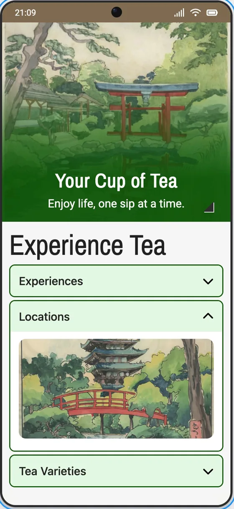
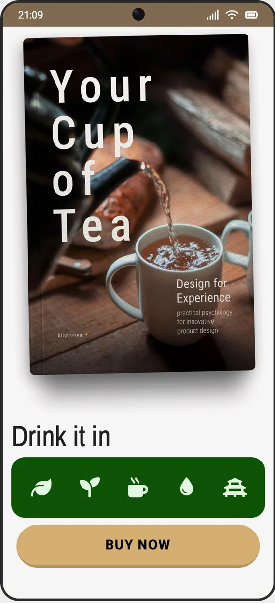
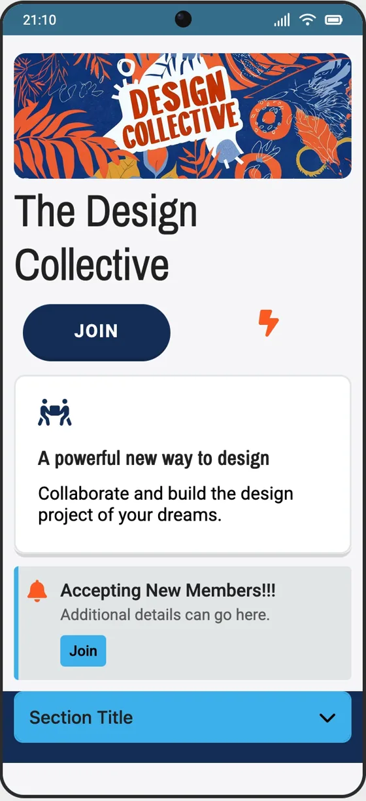
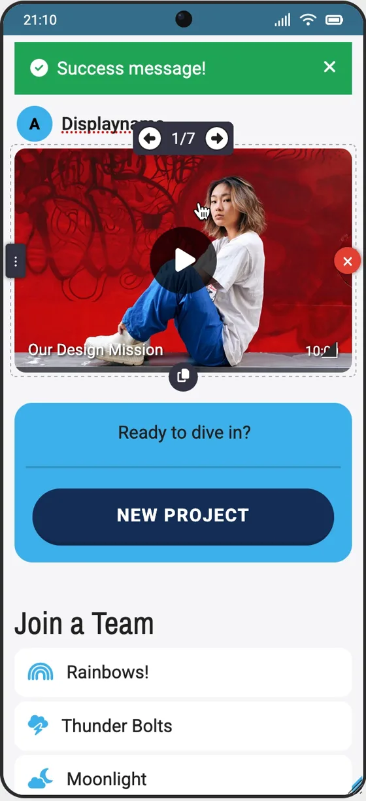
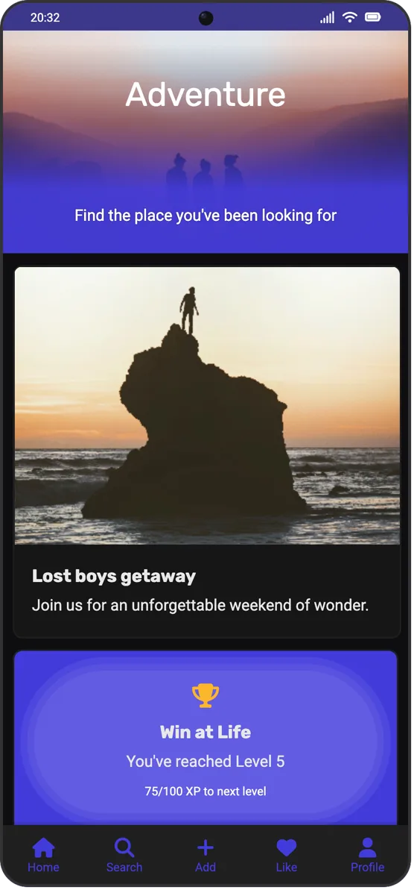
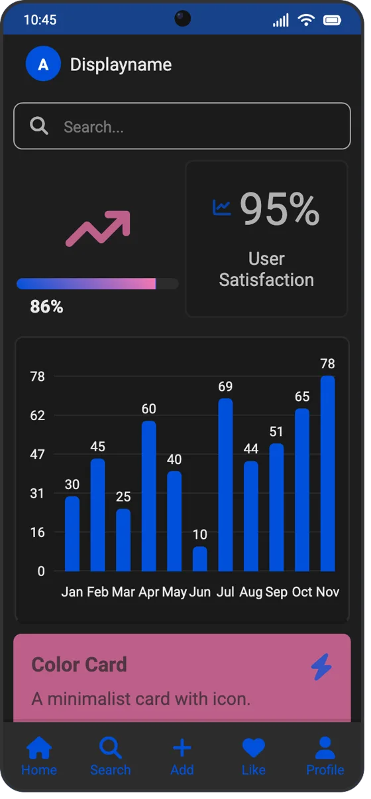
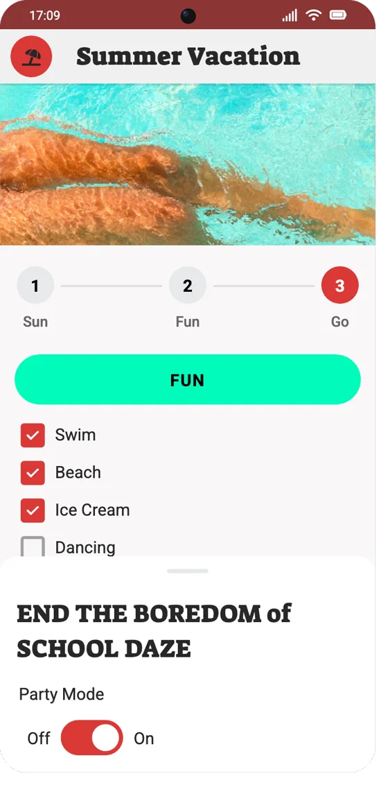
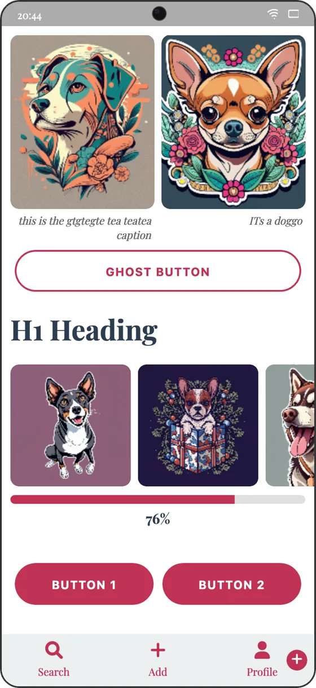
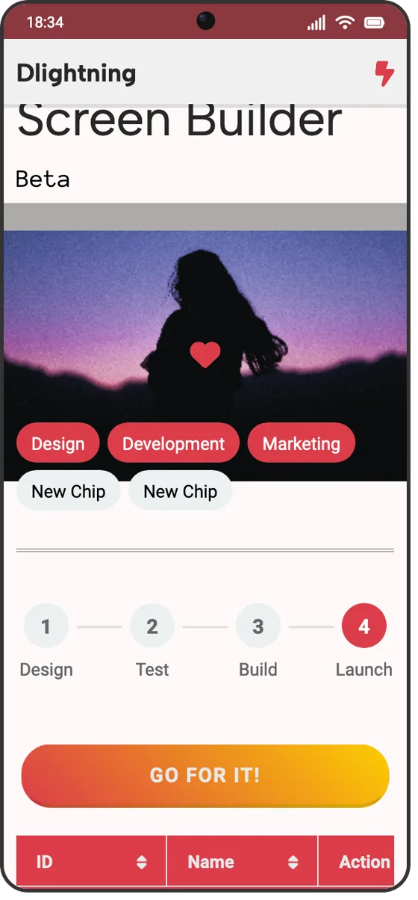
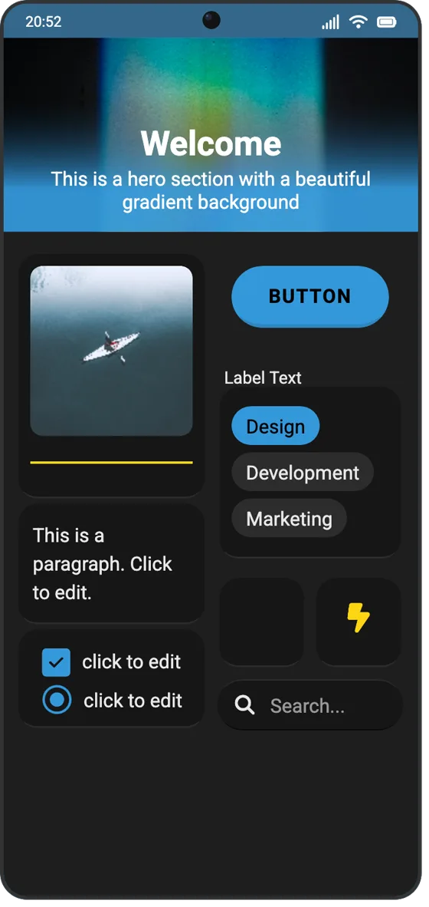
What's in the sidebar
More than fifty parts, most with several layouts each. These are the names you'll find in the tool, grouped the way an app is usually put together.
- Building blocks
- Adjustable Space, Icon, Image, Button, Divider Line, Blank Card, Color Block, Columns
- Text
- Heading (H1 to H6), Paragraph, Block Quote, Bullet List, Field Label
- Forms
- Input Field, Text Area, Checkbox, Radio Button, Form Group, Dropdown, Toggle Switch, Range Slider, Date Picker, File Upload
- Navigation
- Top Navigation Bar, Sidebar, Bottom Navigation Bar, Tabs, Search Bar, Pagination, Floating Action Button, Bottom Sheet, Footer
- Content
- Hero Section, Image Card, Text Card, List Item, Comparison Card, Accordion, Avatar, Pills
- Feedback
- Alert, Notification, Modal Pop-up, Progress Indicator, Progress Tracker
- Media and data
- Image Gallery, Video, Music Player, Data Table, Bar Graph, Pie Graph
- Chat
- Left Chat Bubble, Right Chat Bubble, Chat Input, Keyboard
- Your own
- The Custom Component Editor takes HTML with inline styles, previews it and adds it to the screen.
Where it fits
Screen Builder is for the first version of a screen, when the question is whether it works at all. Here's how it compares with the two things people usually reach for.
| Task | Screen Builder | A design tool like Figma | A paper sketch |
|---|---|---|---|
| Getting started | Open the page | Sign up, then start a file | Find a pen |
| The first screen | Assembled from ready parts | Drawn in frames, or from a UI kit | Drawn by hand |
| Design skills needed | None; parts arrive styled | Some, to make it look right | None, and it shows |
| Changing the brand colour | Once; every screen follows | Through styles you set up first | Redraw every screen |
| Device sizes | Twenty presets, phone to desktop | Any frame size | Whatever fits the page |
| Freeform drawing | No, components only | Yes | Yes |
| Clickable prototype | No | Yes | No |
| What you hand over | PNG images | PNG, SVG, PDF and specs | A photo of the page |
| Cost | Free, or $6 a month for Pro | Free tier, then paid seats | The paper |
Free until you need more
Start without an account. Sign in when you want to save your work, and go Pro only when you hit a limit.
Free
$0
No card, no trial clock.
- Two screens without an account
- A third screen and two saved projects with a free account (Google or email)
- Up to 28 components per project
- Every theme setting and PNG download
Pro
$6a month
Or $60 for a year, which works out to $5 a month.
- Unlimited projects and screens
- No cap on components per project
- Your images saved with your projects
- Early access to new components
Questions people ask
Something not covered? Ask us directly.
What is a screen builder?
A screen builder assembles an app screen from ready-made parts instead of drawn shapes. You place a navigation bar, a heading, a form and a card on a device-sized frame and see the layout before anyone writes code.
Do I need design skills?
No. Every component arrives already styled, and one theme sets the colours and fonts for every screen, so the result looks consistent without design training. The worst you can do is pick a loud colour, and the Theme tab takes that back in one drag.
Is Screen Builder free?
Yes. You can build two screens without an account. A free account adds a third screen, two saved projects and up to 28 components per project. Pro, at $6 a month or $60 a year, removes the limits.
Do I need to install anything?
No. Screen Builder runs in a desktop web browser. You sign in, with Google or an email address, only when you want to save projects.
How do I export my screens?
Choose Download PNG Image at the bottom of the sidebar. Each screen saves as a picture you can drop into a deck, a ticket or a message.
Can I make my own components?
Yes. The Custom Component Editor takes a block of HTML with inline styles, previews it, and adds it to the selected screen.
Does it replace Figma?
No. Screen Builder is quicker for the first layout, when the question is whether a screen works at all. Pixel-level drawing, clickable prototypes and a shared design system belong in Figma.
Does it produce code?
No. It produces pictures of screens for planning and discussion. A developer builds the real thing from them, and is usually glad to get a picture instead of a paragraph.
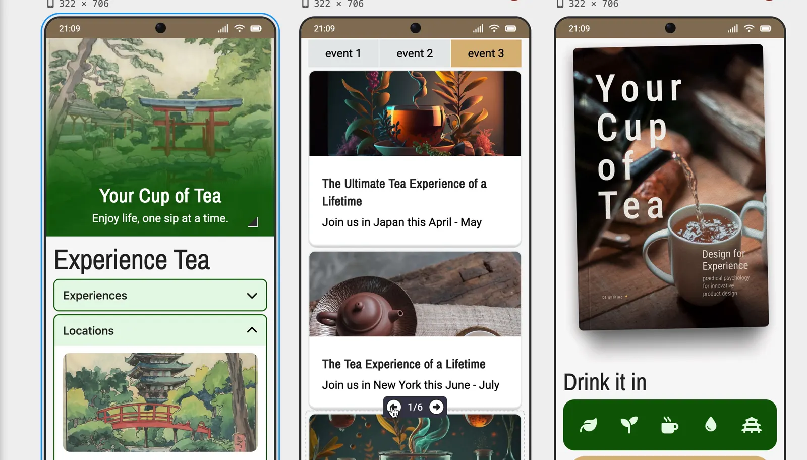
Your first screen is two clicks away.
No account for the first two screens, nothing to install. Open it, click a navigation bar, and keep going.
Open Screen Builder